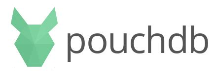

Met replication is het eenvoudig om clusters van clones te maken om de 99.9% uptime te kunnen garanderen, gegeven de juiste loadbalancing instellingen. Als voorbeeld gaan we een open-source JavaScript DB gebruiken genaamd PouchDB. PouchDB draait goed client-side in de browser, en interfacet heel gemakkelijk met zijn inspirator, CouchDB. Met Pouch is het een kwestie van een paar regeltjes code om replication aan te zetten tussen Pouch en de “master” Couch database, zoals ook zichtbaar op de Pouch website:
var db = new PouchDB('dbname');
db.put({
_id: 'dave@gmail.com',
name: 'David',
age: 69
});
db.changes().on('change', function() {
console.log('Ch-Ch-Changes');
});
db.replicate.to('http://example.com/mydb');
Wat is het doel? Replication op te zetten tussen de cursussen database van 2. document stores en de PouchDB JS web-based client. Dat kan op verschillende manieren:
Gebruik in de oefeningen de CDN versie om het jezelf gemakkelijk te maken. Maak een leeg .html bestand aan en kopieer de Quick Start code over:
<script src="//cdn.jsdelivr.net/npm/pouchdb@7.2.1/dist/pouchdb.min.js"></script>
<script>
var db = new PouchDB('my_database');
</script>Vergeet niet dat je lokale CouchDB waarschijnlijk draait op poort 5984.
db.put(). Vul alle JSON properties in: kijk naar een bestaand document in je Couch database..html bestand aan, en stel een remote URL in om vanuit JS onmiddellijk op de remote DB te kunnen queryen.
{ map: function(doc) { emit(...); }, reduce: '_count}. Zie docs in link.Maak een nieuw .html bestand aan, en stel continuous replication in. Voeg dan een nieuw document toe in de CouchDB Admin console. Maak in HTML een knop die gewoon records afdrukt via console.log(). Wordt het nieuwe document getoond? Gebruik deze boilerplate:
<script src="//cdn.jsdelivr.net/npm/pouchdb@7.2.1/dist/pouchdb.min.js"></script>
<button id="btn">Print docs</button>
<pre id="pre">
...
</pre>
<script>
function print(doc) {
document.querySelector('#pre').innerHTML = JSON.stringify(doc);
}
var db = new PouchDB('my_database');
// do your setup here
function queryDocs() {
// do your thing here
print('goed bezig');
}
document.querySelector("#btn").addEventListener("click", queryDocs);
</script>